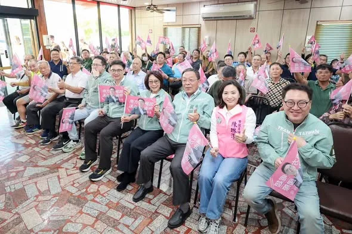
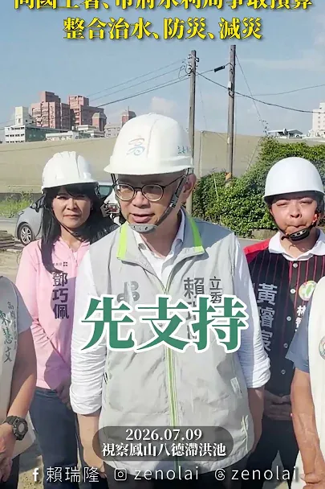
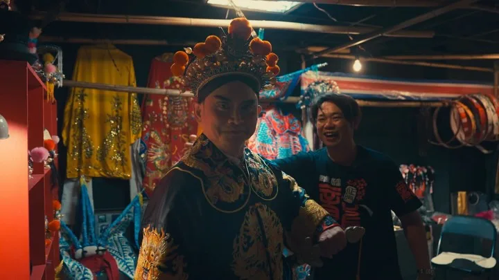
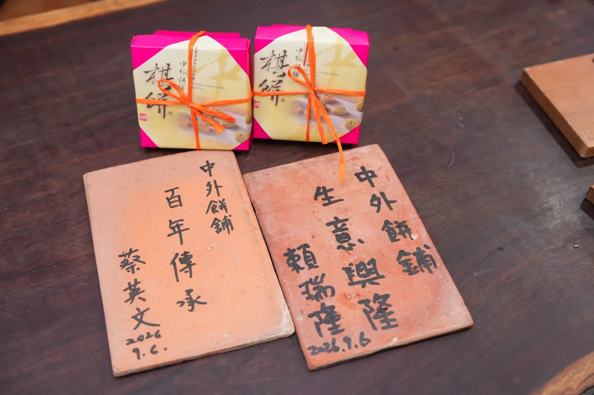
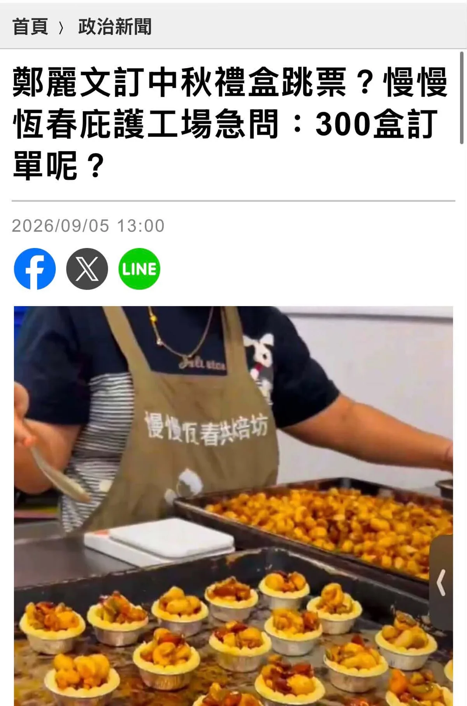
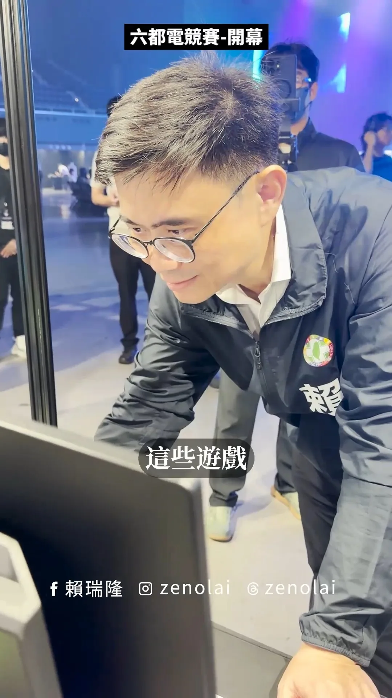
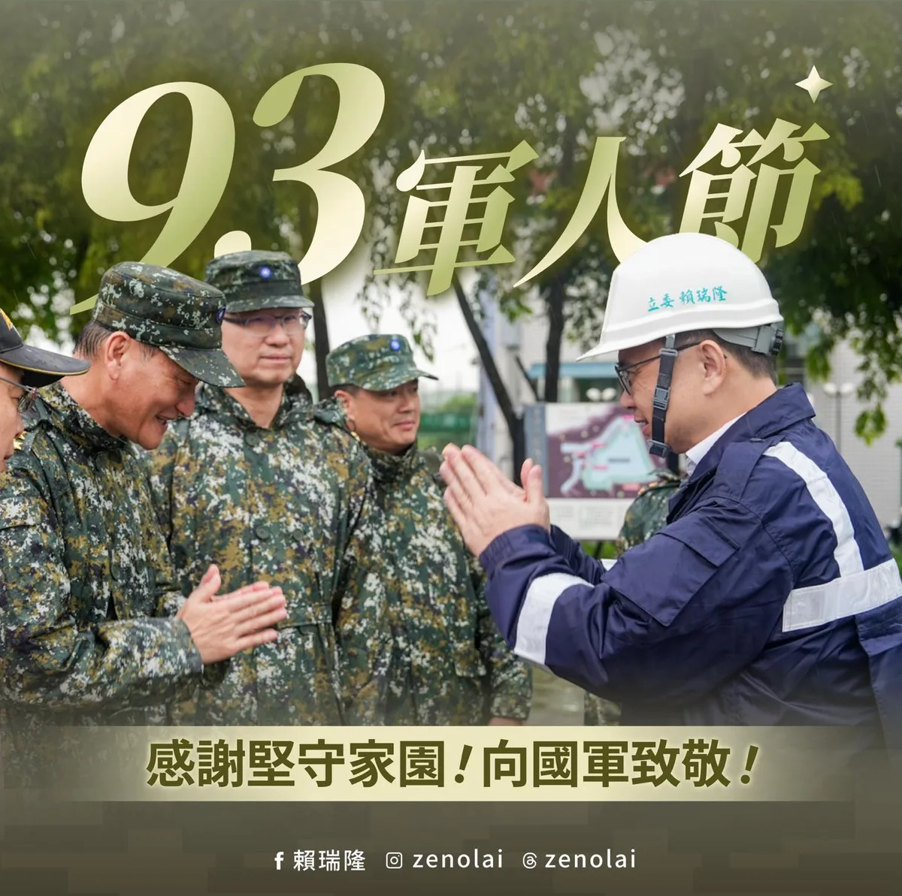
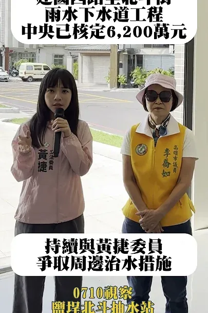

賴瑞隆zenolai

@zenolai:趁著行程空檔來碗肉燥飯，也外帶幾份給助理們。 一碗肉燥飯，有人喜歡滷汁多一點、有人喜歡清爽一點，每個人口味不同；一座城市也是一樣，有不同的想法、不同的選擇。 高雄之所以偉大，就在於城市有多元的聲音，也有包容不同選擇的胸襟。我也會繼續努力，爭取更多市民的認同。 每一位認真打拚、用心經營的在地店家都相當不簡單，我們一起支持高雄好味道，也祝福大家生意興隆！
Accounts
| 平台 | 帳號 | 已收錄貼文 | 最後更新 |
|---|---|---|---|
| 官網 | https://zenolai.oen.tw/ | 0 | — |
| https://www.facebook.com/zenolai2/ | 110 | 2026-09-07 12:03 | |
| https://www.instagram.com/zenolai/ | 100 | 2026-09-07 09:22 | |
| Threads | https://www.threads.com/@zenolai | 129 | 2026-09-11 18:31 |
| YouTube | https://www.youtube.com/@%E8%B3%B4%E7%91%9E%E9%9A%86 | 62 | 2026-09-11 18:13 |
| LINE 官方帳號 | https://lin.ee/zW17s0a | 0 | — |
Timeline
顯示 401 / 401 則
@zenolai:趁著行程空檔來碗肉燥飯，也外帶幾份給助理們。 一碗肉燥飯，有人喜歡滷汁多一點、有人喜歡清爽一點，每個人口味不同；一座城市也是一樣，有不同的想法、不同的選擇。 高雄之所以偉大，就在於城市有多元的聲音，也有包容不同選擇的胸襟。我也會繼續努力，爭取更多市民的認同。 每一位認真打拚、用心經營的在地店家都相當不簡單，我們一起支持高雄好味道，也祝福大家生意興隆！


隆來看歌仔戲！這次瑞隆學做戲，跤步手路猶無夠水氣，請大家多多包涵，來給瑞隆拍噗仔👏
謝謝其邁市長一路相挺，更把我當作最好的兄弟，我會扛起這份信任與責任，和高雄隊一起努力，為高雄開創新的篇章！

台上用心演一齣好戲，感動觀眾；城市用心拚每一天，幸福市民。

哈囉你好嗎！在哈囉市場一路哈囉到底，大家真的有夠暖、讚啦👍

@zenolai:「台上用心演一齣好戲，感動觀眾； 城市用心拚每一天，幸福市民。」 非常感謝郭春美老師和江明龍團長的協助和指導，帶領著我體驗歌仔戲從準備、練習到登台演出的完整過程。 頂著繁複的妝髮、穿上厚重的戲服，一次又一次的身段練習，親自體驗過，才真正瞭解每一場精彩演出的背後，是多少的累積和付出。藝術工作者對自我的要求極度嚴格，所有的幕後辛勞，只為了站上舞台那一刻，把最好的一面呈現給觀眾。 「台上一分鐘，台下十年功」 一棚好戲，需要時間準備；一座城市，乃是點滴累積。這段體驗讓我深刻感受，藝術和市政有著相同的精神，以專業、專注、經驗服務群眾，高雄在我們一棒一棒接續努力下奠定基礎，打造出閃亮的港灣城市品牌。 好戲帶給觀眾滿滿感動，好市政帶給市民滿滿幸福。下一階段，我們要讓從高雄的土地和生活中成長茁壯的文化推向國際市場。 「年年壽花紅、當朝鐵樹開、三仙齊下界、福祿壽仙來～」 扮仙，是傳統謝神戲裡的重要開場，除了答謝神靈，更是賜福大眾。願以此為引，祝福市民朋友平安健康、高雄百業順昌興旺。 我會一直打拚，為著咱的城市。

「挺瑞隆 做市長！」 #路竹後援會 成立！ 今天三場後援會接力成立，最後一站來到路竹。謝謝路竹區農會王和雄理事長擔任榮譽會長、謝棋萬董事長擔任會長，以及後援會夥伴和路竹鄉親相挺。 路竹是高雄的傳產重鎮，也是科技產業廊帶的重要節點，我在立院的好兄弟 邱志偉委員和我長期在經濟委員會為產業發聲，爭取多項建設，未來我也會持續和志偉分工，攜手議員夥伴，讓路竹的產業和地方建設持續升級推進。 我們的目標很清楚，路竹贏、北高雄就贏！11月28日，除了要讓市長順利接棒，也要全力支持 #黃明太議員 、陳琳潔，讓高雄議會過半，市政建設才能持續推進，為路竹發展再贏一次！ 康裕成 高雄市議長 黃彥毓 前鎮小港 我願意
潘孟安秘書長：「眾人做，眾人得。匯聚眾人之善，就能成就眾人之志。」 我始終相信，政治工作無他，誠信而已。 鄭麗文 傅崐萁 翁曉玲 首頁>政治新聞 政治新聞 鄭麗文訂中秋禮盒跳票？ 慢慢 恆春庇護工場急問:300盒 300盒訂 單呢？ 2026/09/05 2026/09/0513:00 13:00 f LINE 2S 慢慢反春共焙坊'." referrerpolicy="no-referrer">
感謝信賴之友會、小英之友會全力相挺，一起顧民主、拚產業，為高雄開創下一個黃金十年！
謝謝其邁市長一路相挺，更把我當作最好的兄弟，我會扛起這份信任與責任，和高雄隊一起努力，為高雄開創新的篇章！

把高雄放在心上、把責任扛在肩上，我會全力以赴為高雄努力！
@zenolai:隆來看歌仔戲！ 這次瑞隆學做戲，跤步手路猶無夠水氣，請大家多多包涵，來給瑞隆拍噗仔👏

高雄具備多元產業條件，更要結合AI與智慧科技，帶動產業升級、創造新機會！

讓高雄的故事，走向世界！🌏 一場好戲，台上幾十分鐘，背後卻是無數次的練習與準備。 藝術工作者用專業帶給觀眾感動，政治工作者則要用專業，讓市民生活得更好。這份對專業的要求，其實是一樣的。 過去20多年，高雄從高美館、駁二、衛武營、高流，到春天藝術節、大港開唱、高雄電影節、TTXC，逐步累積出完整的文化場館與城市品牌，也打下深厚的文化基礎。下一階段，要讓這些場館、活動與城市故事，轉化成更多屬於高雄的作品與文化內容。 因此，我提出 「文化高雄．世界舞台」7大政策、18項計畫，讓文化從土地生根、從生活長出創作，讓更多好作品在高雄誕生。 📚 文化生根｜社區文化扎根：61座圖書館串起生活圈。 🏘️ 時光再生｜歷史街區再生：建置38區文化故事庫。 🎭 百藝傳世｜盤點文化職人與傳統技藝，培育青年接班。 📖 南方立論｜建立大南方人文藝術研究，述說高雄自己的故事。 🎬 時光再生｜培育表演人才、支持在地原創，推動劇場人口倍增。 🌊 內容造浪｜布局四大文化內容基地，發展影視、音樂、動漫、遊戲與IP產業等。 🌏 國際交陪｜從國際邀演走向策展共製，讓高雄作品進入國際市場。 我相信，文化就存在於我們生活的街區、記憶、語言，以及每一個人的故事裡。 未來，要讓孩子從小接觸文化、青年有機會創造文化、創作者能在高雄安心創作，也讓一代又一代累積下來的文化被好好傳承。 文化高雄，世界舞台。一起讓高雄的故事，邁向國際！

颱風期間不能鬆懈，持續確認工程進度與防汛整備。

「台上用心演一齣好戲，感動觀眾； 城市用心拚每一天，幸福市民。」 非常感謝郭春美老師和江明龍團長的協助和指導，帶領著我體驗歌仔戲從準備、練習到登台演出的完整過程。 頂著繁複的妝髮、穿上厚重的戲服，一次又一次的身段練習，親自體驗過，才真正瞭解每一場精彩演出的背後，是多少的累積和付出。藝術工作者對自我的要求極度嚴格，所有的幕後辛勞，只為了站上舞台那一刻，把最好的一面呈現給觀眾。 「台上一分鐘，台下十年功」 一棚好戲，需要時間準備；一座城市，乃是點滴累積。這段體驗讓我深刻感受，藝術和市政有著相同的精神，以專業、專注、經驗服務群眾，高雄在我們一棒一棒接續努力下奠定基礎，打造出閃亮的港灣城市品牌。 好戲帶給觀眾滿滿感動，好市政帶給市民滿滿幸福。下一階段，我們要讓從高雄的土地和生活中成長茁壯的文化推向國際市場。 「年年壽花紅、當朝鐵樹開、三仙齊下界、福祿壽仙來～」 扮仙，是傳統謝神戲裡的重要開場，除了答謝神靈，更是賜福大眾。願以此為引，祝福市民朋友平安健康、高雄百業順昌興旺。 我會一直打拚，為著咱的城市。

@zenolai:今天和 @tsai_ingwen 總統一起拜訪中外餅舖庇護工場，體驗製餅、包裝，也關心庇護員工的工作與生活。 中秋節將近，邀請大家一起支持庇護工場和身障團體的禮盒，讓台灣人的善意持續循環！

@zenolai:@ananpingtung 潘孟安秘書長：「眾人做，眾人得。匯聚眾人之善，就能成就眾人之志。」 我始終相信，政治工作無他，誠信而已。 @clw1112 傅崐萁 @hsiao_ling_weng

高雄挺電競，讓夢想有舞台、讓選手有未來！🎮

九三軍人節，向守護台灣的國軍致敬🫡 從日常戰備、海空巡弋，到颱風豪雨期間投入救災，國軍弟兄姊妹總是在國家與人民需要的時候，堅守崗位、挺身而出。 中央政府照顧國軍！今年7月起，專業加給、主管職務加給每月各調增2,000元，新增第三類型戰鬥部隊加給每月4,000元，戰鬥部隊義務役官士兵也比照支領，明年1月起，軍公教整體加薪4%，持續給予國軍更實質的支持。 我們安穩的日常，背後都有國軍的辛勞。謝謝所有現役及退役國軍守護家園，祝福大家軍人節快樂！

和蔡英文總統一起動手做月餅，用行動支持庇護工場，讓善的循環延續、讓今年中秋充滿溫暖！🥮
@zenolai:我只不過唱個「離開地球表面」，怎麼下一秒就離開地面了？
第四棒的挑戰
@zenolai:讓高雄的故事，走向世界！🌏 一場好戲，台上幾十分鐘，背後卻是無數次的練習與準備。 藝術工作者用專業帶給觀眾感動，政治工作者則要用專業，讓市民生活得更好。這份對專業的要求，其實是一樣的。 過去20多年，高雄從高美館、駁二、衛武營、高流，到春天藝術節、大港開唱、高雄電影節、TTXC，逐步累積出完整的文化場館與城市品牌，也打下深厚的文化基礎。下一階段，要讓這些場館、活動與城市故事，轉化成更多屬於高雄的作品與文化內容。 因此，我提出 「文化高雄．世界舞台」7大政策、18項計畫，讓文化從土地生根、從生活長出創作，讓更多好作品在高雄誕生。 📚 文化生根｜社區文化扎根：61座圖書館串起生活圈。 🏘️ 時光再生｜歷史街區再生：建置38區文化故事庫。 🎭 百藝傳世｜盤點文化職人與傳統技藝，培育青年接班。 📖 南方立論｜建立大南方人文藝術研究，述說高雄自己的故事。 🎬 時光再生｜培育表演人才、支持在地原創，推動劇場人口倍增。 🌊 內容造浪｜布局四大文化內容基地，發展影視、音樂、動漫、遊戲與IP產業等。 🌏 國際交陪｜從國際邀演走向策展共製，讓高雄作品進入國際市場。

視察防颱整備工作，全力守護市民朋友安全！
「台上用心演一齣好戲，感動觀眾； 城市用心拚每一天，幸福市民。」 非常感謝郭春美老師和江明龍團長的協助和指導，帶領著我體驗歌仔戲從準備、練習到登台演出的完整過程。 頂著繁複的妝髮、穿上厚重的戲服，一次又一次的身段練習，親自體驗過，才真正瞭解每一場精彩演出的背後，是多少的累積和付出。藝術工作者對自我的要求極度嚴格，所有的幕後辛勞，只為了站上舞台那一刻，把最好的一面呈現給觀眾。 「台上一分鐘，台下十年功」 一棚好戲，需要時間準備；一座城市，乃是點滴累積。這段體驗讓我深刻感受，藝術和市政有著相同的精神，以專業、專注、經驗服務群眾，高雄在我們一棒一棒接續努力下奠定基礎，打造出閃亮的港灣城市品牌。 好戲帶給觀眾滿滿感動，好市政帶給市民滿滿幸福。下一階段，我們要讓從高雄的土地和生活中成長茁壯的文化推向國際市場。 「年年壽花紅、當朝鐵樹開、三仙齊下界、福祿壽仙來～」 扮仙，是傳統謝神戲裡的重要開場，除了答謝神靈，更是賜福大眾。願以此為引，祝福市民朋友平安健康、高雄百業順昌興旺。 我會一直打拚，為著咱的城市。
@zenolai:其邁市長！電話要接喔！ 謝謝其邁市長，用六年時間，為我們拚出一個精彩的、光榮的、豐富的高雄。 今天受邀出席 @chenchimai 陳其邁市長《高雄 緊緊緊：2314天極限轉型》新書發表，我分享了讀後心得，也是這六年最深刻的感受： ✔️面對自己的不足 ✔️能堅持，但不能固執 ✔️面對錯誤，不閃躲 我相信大家讀完這本書，都能身歷其境，而且非常有感，更能理解其邁市長「緊緊緊」的努力都是為了高雄。我就不在這邊劇透太多，歡迎一起買書來看！ 我想，其邁市長最後一次市政總質詢的發言，就是這本最好的註解： 「我們永遠要對我們的家鄉懷著熱情。」 我也向各位報告，高雄的精彩未完待續。因為高雄的故事，是所有高雄人共同寫下的，而我也參與其中。未來，我會全力以赴把高雄的「續集」寫得更加精采。 最後，也要拜託其邁市長，以後電話要接喔！大賴的電話優先接，小賴的電話也要接。 高雄的未來，我們繼續一起拚！
讓運動成為日常！成功爭取4.6億！ 小港國民運動中心預計10月底試營運！ 一座進步的城市，要為每位市民打造安心、便利的運動空間。迎接99國民體育日，很高興跟大家宣布，我一路積極推動、爭取經費支持的 #小港國民運動中心 目前工程進度超前，預計今年10月底就要正式試營運！ 為了讓建設順利推進，我協調各方資源，成功為小港爭取4.6億元經費補助。如今，這座屬於小港、也屬於南高雄的重要運動場館，終於要和大家見面。 運動中心位於小港森林公園，建築外觀融入飛機起飛的意象，也呼應小港的在地特色。館內規劃完整，一樓設有溫水游泳池與SPA池，並導入AI防溺預警系統，提升使用安全；二樓有約三百坪健身中心、女性訓練區，以及空中瑜珈、皮拉提斯教室；三樓則規劃挑高綜合球場與自由重量訓練區，滿足不同年齡層的運動需求。 下班後能痛快流一場汗，是最好的充電方式。配合運動部9月新推出的 #揮汗有禮 計畫，中央用心推廣全民運動，我們則在地方全力把硬體建設做到最好！ 趁著國民體育日，邀請全民一起開啟運動生活。未來小港運動中心落成後，歡迎大家多來這裡運動打卡、兌換健康好禮！把地方建設好，讓市民擁有更健康的生活空間，我們繼續一起拚！
@zenolai:謝謝其邁市長一路相挺，更把我當作最好的兄弟，我會扛起這份信任與責任，和高雄隊一起努力，為高雄開創新的篇章！
@zenolai:高雄隊，正式出發！ 接下關鍵第四棒，和所有隊友並肩向前，延續進步，為高雄拚出更好的未來。 高雄第一，全力以赴💪